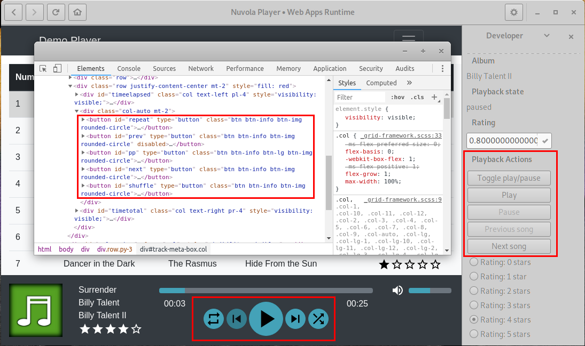

Service Integrations Guide
This guide describes creation of a new service integration for Nuvola Player 3 from scratch. The goal is to write an integration script for Test service shipped with Nuvola Player and to prepare you to create your own service integration. Unlike the Service Integrations Tutorial, this guide provides also insight to the Nuvola Player Core and explain some design decisions.
Prepare development environment
- Install Nuvola Player 3
-
Create a project directory
~/projects/nuvola-player(or any other name, but don't forget to adjust paths in this tutorial).mkdir -p ~/projects/nuvola-player
-
Create a copy of the test service shipped with Nuvola Player 3.
cd ~/projects/nuvola-player cp -r /usr/share/nuvolaplayer3/web_apps/test ./test-integration # or cp -r /usr/local/share/nuvolaplayer3/web_apps/test ./test-integration
-
Rename old integration files (or remove it).
cd ~/projects/nuvola-player/test-integration mv metadata.json metadata.old.json mv integrate.js integrate.old.js -
Create new integration files and open them in your preferred plan-text editor (Gedit, for example).
cd ~/projects/nuvola-player/test-integration touch metadata.json integrate.js gedit metadata.json integrate.js >/dev/null 2>&1 & -
Initialize a new Git repository for your service integration.
You can skip this step if you don't know Git version control system. However, if you would like to have your service integration maintained as a part of the Nuvola Player project and available in the Nuvola Player repository, you will increase maintenance burden of the project, because somebody (me) will have to create Git repository from tar.gz archive of your service integration anyway.
See Git tutorial.
cd ~/projects/nuvola-player/test-integration git init . git add metadata.json integrate.js git commit -m "Initial commit"
Create metadata file
Let's try to launch Nuvola Player 3 with our empty service integration. Argument -D enables
debugging output to console and arguments -A ~/projects/nuvola-player tells Nuvola Player to
load service integrations only from directory ~/projects/nuvola-player.
nuvolaplayer3 -D -A ~/projects/nuvola-player
You will see an empty list of services and an error message in terminal that tells you Nuvola Player failed to load your service integration because of invalid metadata file. So let's create it!
[Master:WARNING Nuvola] webappregistry.vala:169: Unable to load app from /home/fenryxo/projects/nuvola-player/test-integration: Invalid metadata file '/home/fenryxo/projects/nuvola-player/test-integration/metadata.json'. Expecting a JSON object, but the root node is of type '(null)'
Metadata file contains basic information about your service integrations. It uses
JSON format and it's called metadata.json.
Let's look at the example:
{ "id": "test-integration", "name": "My Test Integration", "maintainer_name": "Jiří Janoušek", "maintainer_link": "https://github.com/fenryxo", "version_major": 1, "version_minor": 0, "api_major": 3, "api_minor": 0, "categories": "AudioVideo;Audio;", "home_url": "nuvola://home.html" }
This file contains several mandatory fields:
id-
Identifier of the service. It can contain only letters
a-z, digits0-9and dash-to separate words, e.g.google-playfor Google Play Music,8tracksfor 8tracks.com. (Nuvola Player 2 required the id must be same as the directory name of the service integration, but Nuvola Player 3 doesn't have this limitation.) name-
Name of the service (for humans), e.g. "Google Play Music".
version_major-
Major version of the integration, must be an integer > 0. You should use
1for an initial version. This number is increased, when a major change occurs. version_minor-
A minor version of service integration, an integer >= 0. This field should be increased when a new release is made.
maintainer_name-
A name of the maintainer of the service integration.
maintainer_link-
A link to a page with contact to maintainer (including
http://orhttps://) or an email address prefixed bymailto:. api_majorandapi_minor-
A required version of JavaScript API, currently
3.0. categories-
Application categories suitable for the web app. It is used to place a desktop launcher to proper category in applications menu. Nuvola Player services should be in
"AudioVideo;Audio;". home_url-
Home page of your service. The test integration service uses
nuvola://home.htmlthat refers to filehome.htmlin the service's directory. You will use real homepage later in your own service integration (e.g.https://play.google.com/music/for Google Play Music).This field is not required if you use custom function to handle home page request. See Web apps with a variable home page URL.
If you use Git, commit changes
cd ~/projects/nuvola-player/test-integration git add metadata.json git commit -m "Add initial metadata for service"
Run nuvolaplayer3 -D -A ~/projects/nuvola-player again and you will see a list with one service :-)
App Runner and Web Worker
Nuvola Player uses two processes for each service (web app):
-
App Runner process that manages user interface, desktop integration components and a life-cycle of the WebKitGtk WebView. On start-up, Nuvola Player executes once the integration script in the App Runner process to perform initialization of the web app. and then executes
-
Web Worker process is created by WebKitGtk WebView and it's the place where the web interface of a web app lives, i.e. where the website is loaded. Nuvola Player executes the integration script in the Web Worker process everytime a web page is loaded in it to integrate the wep page.
Debugging and logging messages
You might want to print some debugging messages to console during development. There are two types of them in Nuvola Player:
- JavaScript console is shown in the WebKit Web Inspector.
- Terminal console is the black window with white text. Debugging messages are only printed
if you have launched Nuvola Player with
-Dor--debugflag.
The are two ways how to print debugging messages:
- Nuvola.log() always prints only to terminal console and it's available in both App Runner and Web Worker processes.
- console.log() prints to JavaScript console only in the Web Worker process. Nuvola.log is used as a fallback and a warning is issued in the App Runner process.
App Runner Process
If you launch your service, either from the list of services or with command
nuvolaplayer3 -D -A ~/projects/nuvola-player -a test-integration, you will see an error
dialog saying "Invalid home page URL - The web app integration script has provided an empty home
page URL." and the app will quit. That's because Nuvola Player makes no assumption about where the
homepage URL is stored and expect service integration script provides this information explicitly
during a app runner initialization phase. Since we have an empty integration script that does
nothing, nobody has told Nuvola Player "Hey, look at home_url field of metadata.json!".
Let's create base integrate.js script with following content:
1 2 3 4 5 6 7 8 9 10 11 12 13 14 15 16 17 18 19 20 21 22 23 24 25 26 27 28 29 30 31 32 33 34 35 | /* * Copyright 2014 Your name <your e-mail> * * Redistribution and use in source and binary forms, with or without * modification, are permitted provided that the following conditions are met: * * 1. Redistributions of source code must retain the above copyright notice, this * list of conditions and the following disclaimer. * 2. Redistributions in binary form must reproduce the above copyright notice, * this list of conditions and the following disclaimer in the documentation * and/or other materials provided with the distribution. * * THIS SOFTWARE IS PROVIDED BY THE COPYRIGHT HOLDERS AND CONTRIBUTORS "AS IS" AND * ANY EXPRESS OR IMPLIED WARRANTIES, INCLUDING, BUT NOT LIMITED TO, THE IMPLIED * WARRANTIES OF MERCHANTABILITY AND FITNESS FOR A PARTICULAR PURPOSE ARE * DISCLAIMED. IN NO EVENT SHALL THE COPYRIGHT OWNER OR CONTRIBUTORS BE LIABLE FOR * ANY DIRECT, INDIRECT, INCIDENTAL, SPECIAL, EXEMPLARY, OR CONSEQUENTIAL DAMAGES * (INCLUDING, BUT NOT LIMITED TO, PROCUREMENT OF SUBSTITUTE GOODS OR SERVICES; * LOSS OF USE, DATA, OR PROFITS; OR BUSINESS INTERRUPTION) HOWEVER CAUSED AND * ON ANY THEORY OF LIABILITY, WHETHER IN CONTRACT, STRICT LIABILITY, OR TORT * (INCLUDING NEGLIGENCE OR OTHERWISE) ARISING IN ANY WAY OUT OF THE USE OF THIS * SOFTWARE, EVEN IF ADVISED OF THE POSSIBILITY OF SUCH DAMAGE. */ "use strict"; (function(Nuvola) { // Create new WebApp prototype var WebApp = Nuvola.$WebApp(); WebApp.start(); })(this); // function(Nuvola) |
- Lines 2-22
-
Copyright and license information. While you can choose any license for your work, it's recommended to use the license of Nuvola Player as shown in the example.
- Line 25
-
Use strict JavaScript mode in your scripts.
- Lines 27-28 and 35
-
Use self-executing anonymous function to create closure with Nuvola object. (Integration script are executed with
Nuvolaobject bound tothis). - Line 31
-
Create new WebApp prototype object derived from the Nuvola.WebApp prototype that contains handy default handlers for initialization routines, so you don't have to process them, but it's good to know they exist and you can override them if your web app requires more magic ;-)
Global window object not available
This code is executed in a pure JavaScript environment without Window object. Use Nuvola.log() to print logging and debugging messages to terminal instead of console.log().
Initialization routines
On start-up, Nuvola Player performs following actions:
-
App Runner emits the Nuvola.Core::InitAppRunner signal that is processed by Nuvola.WebApp._onInitAppRunner handler by default. This default handler does nothing, feel free to override it.
-
App Runner emits the Nuvola.Core::InitializationForm signal to construct the initialization form. See an article Initialization and Preferences Forms for examples of use case.
-
App Runner emits the Nuvola.Core::LastPageRequest signal that is processed by Nuvola.WebApp._onLastPageRequest handler by default. This handler returns URL of the last visited page or null. If the URL is valid, it is loaded in the Web Worker process and initialization is finished. TODO Advanced - Specify which URL should not be used as a last visited page
-
If the last visited page is null, App Runner emits the Nuvola.Core::HomePageRequest signal that is processed by Nuvola.WebApp._onHomePageRequest handler by default. This handler returns URL specified in the "home_url" field of
metadata.json. If the URL is valid, it is loaded in the Web Worker process and initialization is finished, otherwise Nuvola Player will quit with an error "Invalid home page URL - The web app integration script has provided an empty home page URL." See article Web apps with a variable home page URL for a typical example when it's necessary to override this signal handler.
Run-time events
During run-time, Nuvola Player performs following actions:
-
App Runner emits the Nuvola.Core::HomePageRequest signal to get home page URL when user activates the "Go Home" action (either by keyboard shortcut, menu item, etc.)
-
App Runner emits Nuvola.Core::NavigationRequest just before navigation to a new page. That signal is processed by Nuvola.WebApp._onNavigationRequest handler by default. TODO URL filtering.
-
App Runner emits Nuvola.Core::UriChanged signal when a new page is loaded. That signal is processed by Nuvola.WebApp._onUriChanged handler by default which saves the URI to be later returned by Nuvola.WebApp._onLastPageRequest signal handler.
MediaPlayer Component
Unlike Nuvola Player 2, the core of Nuvola Player 3 called NuvolaKit is more generic and doesn't load media player-specific code by default, so it's up to you to do that. (This design decision allows us to reuse NuvolaKit for other web apps like Unity Web Apps in the future.)
... (function(Nuvola) { // Create media player component var player = Nuvola.$object(Nuvola.MediaPlayer); var WebApp = Nuvola.$WebApp(); ...
The first visible effect is a new menu with playback control actions:
Web Worker Process
The web page of a streaming service is loaded in the Web Worker process, so major part of your integration script will be running here.
Initialization
Web Worker emits Nuvola.Core::InitWebWorker signal when a new page is about to be loaded. The default handler Nuvola.WebApp._onInitWebWorker does nothing, so let's override it:
... var WebApp = Nuvola.$WebApp(); // Initialization routines WebApp._onInitWebWorker = function(emitter) { Nuvola.WebApp._onInitWebWorker.call(this, emitter); var state = document.readyState; if (state === "interactive" || state === "complete") this._onPageReady(); else document.addEventListener("DOMContentLoaded", this._onPageReady.bind(this)); } // Page is ready for magic WebApp._onPageReady = function() { alert("Page ready for magic :-)"); } WebApp.start(); ...
This signal handlers makes sure Document Object Model of the web page is ready and invokes
WebApp._onPageReady method. Note that document's DOMContentLoaded event is emitted when
Document Object Model is ready, but not all resources (images, stylesheets, etc.) might be loaded.
You can also attach the WebApp._onPageReady handler to window's load event that is emitted
when the page is completely loaded, but it is usually not necessary to wait for this event.
Playback state and track details
The first task of your service integration is to extract playback state and track details from the web page and provide them to the media player component. There are two ways how to extract playback state and track details:
- Use Document Object Model to get information from the HTML code of the web page.
- Use JavaScript API provided by the web page if there is any.
The first way is more general and will be described here. The folowing methods are useful:
- document.getElementById -
look-up an element by
idattribute - document.getElementsByName -
look-up elements by
nameattribute - document.getElementsByClassName -
look-up elements by
classattribute - document.getElementsByTagName -
look-up elements by tag name (e.g.
a,div, etc.) - document.querySelector - look-up the first element that matches provided CSS selector
- document.querySelectorAll - look-up all elements that match provided CSS selector
A common idiom is to create an update method to extract metadata from the web page:
... // Create media player component var player = Nuvola.$object(Nuvola.MediaPlayer); // Handy aliases var PlaybackState = Nuvola.PlaybackState; var PlayerAction = Nuvola.PlayerAction; // Create new WebApp prototype var WebApp = Nuvola.$WebApp(); ... WebApp._onPageReady = function() { // Start update routine this.update(); } // Extract data from the web page WebApp.update = function() { } ...
Playback state
Looking at the code of a web page shown in the picture bellow, the code to extract playback state might be. Playback states are defined in an enumeration Nuvola.PlaybackState and set by method player.setPlaybackState().
var PlaybackState = Nuvola.PlaybackState; ... WebApp.update = function() { ... try { switch(document.getElementById("status").innerText) { case "Playing": var state = PlaybackState.PLAYING; break; case "Paused": var state = PlaybackState.PAUSED; break; default: var state = PlaybackState.UNKNOWN; break; } } catch(e) { // Always expect errors, e.g. document.getElementById("status") might be null var state = PlaybackState.UNKNOWN; } player.setPlaybackState(state); ... }

Track details
Similarly, we can obtain track details and pass them to method player.setTrack()
WebApp.update = function() { ... var track = { artLocation: null // always null } var idMap = {title: "track", artist: "artist", album: "album"} for (var key in idMap) { try { track[key] = document.getElementById(idMap[key]).innerText || null; } catch(e) { // Always expect errors, e.g. document.getElementById() might return null track[key] = null; } } player.setTrack(track); ... }

If you use Git, commit changes
cd ~/projects/nuvola-player/test-integration git add integrate.js git commit -m "Extract metadata and playback state"
Player Actions
The second responsibility of a service integration is to manage media player actions:
- Set which actions are enabled.
- Invoke the actions when they are activated.
The first part is done via calls player.setCanPause(), player.setCanPlay(), player.setCanGoPrev() and player.setCanGoNext():
WebApp.update = function() { ... var enabled; try { enabled = !document.getElementById("prev").disabled; } catch(e) { enabled = false; } player.setCanGoPrev(enabled); try { enabled = !document.getElementById("next").disabled; } catch(e) { enabled = false; } player.setCanGoNext(enabled); var playPause = document.getElementById("pp"); try { enabled = playPause.innerText == "Play"; } catch(e) { enabled = false; } player.setCanPlay(enabled); try { enabled = playPause.innerText == "Pause"; } catch(e) { enabled = false; } player.setCanPause(enabled); ... }

To handle playback actions defined in an enumeration PlayerAction, it is necessary to connect to Actions::ActionActivated signal. You can use a convenient function Nuvola.clickOnElement() to simulate clicking.
var PlayerAction = Nuvola.PlayerAction; ... WebApp._onPageReady = function() { // Connect handler for signal ActionActivated Nuvola.actions.connect("ActionActivated", this); // Start update routine this.update(); } ... WebApp._onActionActivated = function(emitter, name, param) { switch (name) { case PlayerAction.TOGGLE_PLAY: case PlayerAction.PLAY: case PlayerAction.PAUSE: case PlayerAction.STOP: Nuvola.clickOnElement(document.getElementById("pp")); break; case PlayerAction.PREV_SONG: Nuvola.clickOnElement(document.getElementById("prev")); break; case PlayerAction.NEXT_SONG: Nuvola.clickOnElement(document.getElementById("next")); break; } }
Always test playback actions
You should click action buttons in the developer's sidebar to be sure they are working as expected.
If you use Git, commit changes
cd ~/projects/nuvola-player/test-integration git add integrate.js git commit -m "Add player actions handling"
Custom actions
Service integrations can also create custom Actions like thumbs up/down or star rating.
What to do next
Supposing you have followed this guide, you have enough knowledge to create your own service integration. You are encouraged to take a look at articles in advanced section to spice up your work:
- URL Filtering (URL Sandbox): Decide which urls are opened in a default web browser instead of Nuvola Player.
- Configuration and session storage: Nuvola Player 3 allows service integrations to store both a persistent configuration and a temporary session information.
- Initialization and Preferences Forms: These forms are useful when you need to get user input.
- Web apps with a variable home page URL: This article covers Web apps that don't have a single (constant) home page URL, so their home page has to be specified by user.
- Custom Actions: This article covers API that allows you to add custom actions like thumbs up/down rating.
- Translations: How to mark translatable strings for Gettext-based translations framework for service integration scripts.
If you would like to have your service integration maintained as a part of Nuvola Player project and distributed in Nuvola Player repository, you have to follow Service Integration Guidelines. Once you have finished your service integration, the next step is to distribute it.